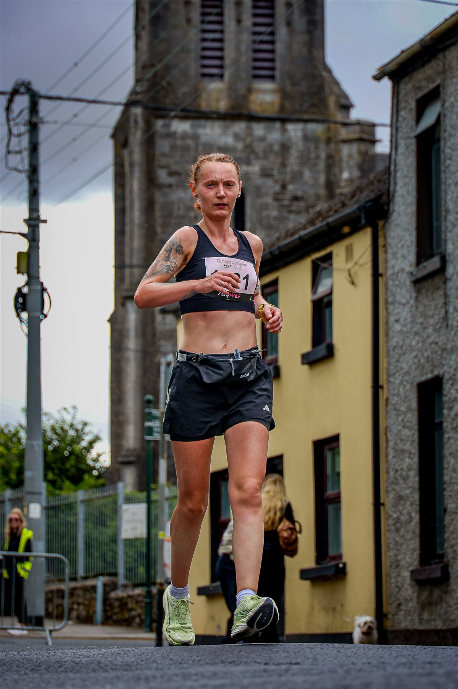
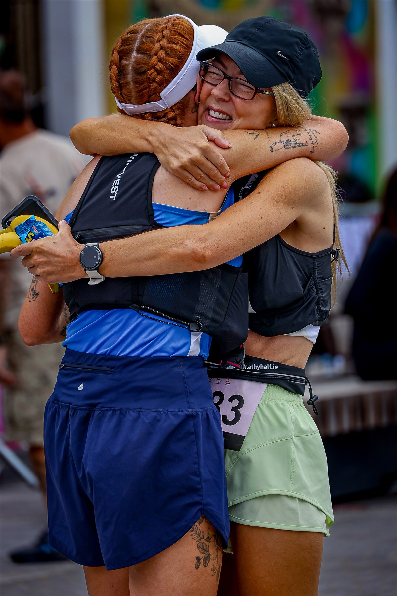

Terry Shanley and Monica Holmes claimed the main titles at the 2026 Athy Half Marathon, held in Athy, County Kildare, on Sunday, 9 August.

Shanley led the men's half-marathon field home in a gun time of 1:11:24. Niall Mc Loughlin finished second in 1:16:14, followed by Darren Molloy in 1:17:25. Holmes won the women's race in 1:26:52. Charlotte Delaney took second place in 1:30:50, with Shannon Denagher completing the podium in 1:31:49.
Official timing records list 955 classified finishers across the event's three distances: 514 in the half marathon, 337 in the 10K and 104 in the 5K.

The shorter races also produced competitive performances. Nikolas De Giorgis won the men's 10K in 35:36, while Paula Guinan secured the women's title in 40:30. In the 5K, Mark Delaney led the men's field in 18:30 and Aileen Barnby was the first woman home in 23:28.
The programme brought runners of different levels together on predominantly closed-road routes starting and finishing near Emily Square and the Shackleton Museum. Organisers thanked the runners, spectators, volunteers, marshals, sponsors, local businesses and the wider Athy community for their contribution to the event.
Image Media coverage
Team: Eduardo Castro, Luis Moreira and Michael Rosa
Photos: Luis Moreira — horizontal image; Michael Rosa — vertical images